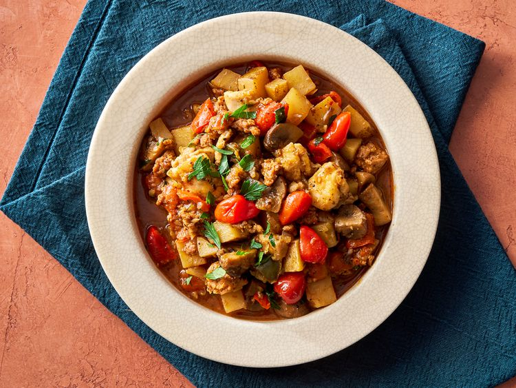

Chicken Murphy

Description
Chicken Murphy is a hearty and flavor-packed stew made with Italian sausage, chicken thighs, potatoes, mushrooms, and sweet and spicy Peppadew peppers in a delicious garlic and white wine sauce. It’s comfort food with a kick!
Ingredients
1 pound bulk Italian sausage
1 pound skinless, boneless chicken thighs, cut into 1-inch cubes
1/4 cup all-purpose flour
2 tablespoons olive oil, divided
1 pound cremini mushrooms, quartered
1 pepper red bell pepper, cut into 3/4-inch pieces
1 green bell pepper, cut in 3/4-inch pieces
1 1/2 pounds russet potatoes, scrubbed and cubed into 1/2-inch pieces
1 cup reduced-sodium chicken broth
1/4 cup brine from Peppadew peppers
1 teaspoon Italian seasoning
1 cup Peppadew peppers, halved
Steps
Gather all ingredients.
Cook sausage in a 5-to 6-quart Dutch oven over medium heat until browned, 6 to 8 minutes; transfer to a bowl with a slotted spoon.
Place flour in a shallow plate; dredge chicken pieces in flour to coat.
Heat 1 tablespoon oil in Dutch oven; add chicken and cook until lightly browned, 4 to 5 minutes. Transfer chicken to the bowl with sausage.
Add remaining 1 tablespoon oil to the Dutch oven. Add mushrooms, onion, and bell peppers. Cook until tender, 6 to 8 minutes.
Stir in garlic and cook until fragrant, about 1 minute.
Stir in potatoes, white wine, chicken broth, brine, Italian seasoning, and salt; bring to a boil. Reduce heat to medium-low, cover, and simmer until potatoes are tender, about 10 minutes.
Add Peppadew peppers and browned chicken and sausage; cook and stir until heated through and sauce is slightly thickened, about 3 minutes.
Sprinkle with parsley before serving.
Home